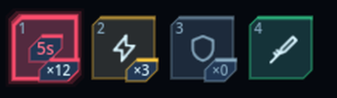
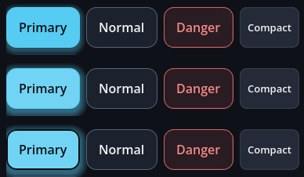

떠 있는 창
GoSurface — 창의 껍데기
팝업·시트·드롭다운이 전부 이것 하나를 쓴다. 안전영역·가상 키보드·고정 머리말/바닥·스크롤 본문· 가장 위 창 판정·포커스 복원·뒤로가기 소유권·끌어서 높이 조절을 한 곳에서 처리한다.
| 배치 | 모습 | 쓰는 곳 |
|---|---|---|
CENTER | 화면 가운데 카드 | 확인창·설정 |
BOTTOM | 아래에서 올라온 시트 | 목록·관리 페이지 |
ANCHOR | 지정한 컨트롤 옆에 붙는 카드 | 드롭다운·컨텍스트 메뉴 |
close_requested 를 받아 숨기거나 지우는 것은
소유한 화면이다 — 왜 닫히는지(저장하고 닫기 vs 버리고 닫기)는 껍데기가 알 수 없다.
GoSheet — 아래에서 올라오는 페이지
var sheet := GoSheet.new()
add_child(sheet)
sheet.open("가방")
sheet.toolbar().add_child(GoStyle.line_edit("검색…"))
sheet.toolbar().visible = true
sheet.footer().add_child(GoStyle.button("닫기", sheet.close, GoStyle.Tone.PRIMARY))
sheet.footer().visible = true자체 CanvasLayer 를 가져 HUD 위에 확실히 올라온다.
open() 은 본문을 비우고 뒤로 버튼·고정 줄을 끈다 — 돌아갈 데가 없는 화면에 죽은
버튼이 남으면 누른 사람은 그것을 고장으로 읽는다.
body 에 넣으면 목록이 길어질 때
화면 밖으로 밀린다. footer() 는 언제나 보인다.
GoDialogs — await 로 받는 확인·알림
if await dialogs.confirm("저장 삭제", "되돌릴 수 없습니다."):
delete_save()GoForm — 폭을 제한하는 폼
브레이크포인트마다 최대 폭이 다르고, 가상 키보드가 올라오면 입력 칸이 그 위로 온다.
GoScroll — 손가락 스크롤
안에 하나만 넣는다. 머리말과 버튼 줄은 밖에 둔다 — 목록이 길어지면 그것들이 화면 밖으로
나가면 안 된다. use_panel_edge() 를 부르면 스크롤바가 카드의 기존 여백 자리로 나가고
내용은 원래 들여쓰기를 유지한다.
알리기
GoNotice — 스낵바
새 메시지가 이전 것을 덮어쓰고 시간이 지나면 사라진다.
GoDialogs,
선택이 필요하면 GoPromptCard 다.
GoPromptCard — 화면을 막지 않는 질문
스크림 없이 화면 한쪽에 떠서 묻는다. 게임은 계속 돈다.
GoCoachMark — 안내 투어
실제 화면의 컨트롤을 하나씩 가리키며 무엇인지 알려 준다. 카드 영역만 입력을 받으므로 가리킨 컨트롤을 실제로 누르면 다음 단계로 넘어간다 — "여기를 누르세요" 가 말이 아니라 동작이 된다.
tour.start([
{"target": bag_button, "title": "가방", "body": "주운 물건이 여기 모입니다."},
{"target": map_button, "title": "지도", "body": "눌러서 전체 지도를 엽니다."},
])HUD
작은 것들이 예쁨을 정한다
큰 판은 잘 다듬어도, 눈에 걸리는 건 언제나 작은 데다 — 두 줄로 갈라진 낱말, 뚝 잘린 글로우, 비좁은 슬롯. 2026-09-13 에 지적받은 네 가지를 위젯·테마 차원에서 고쳤다. 화면(데모)이 아니라 부품을 고쳤으므로 어느 화면에서든 같은 결과다.
| 보였던 것 | 원인 | 고친 것 |
|---|---|---|
코치마크의 Done 이 Don/e |
줄바꿈이 켜진 버튼은 최소 폭에서 글자 폭을 뺀다 — 좁아지면 낱말 안에서 끊는다 | GoStyle.fit_words(): 한 낱말은 접지 않고, 여러 낱말은 가장 긴 낱말 폭을 보장 — 번역 키가 아니라 보이는 글자로 판단하고, 언어가 바뀌면 폼이 다시 입힌다 |
| 꽉 찬 폭 버튼의 글로우가 왼쪽에서 세로로 잘림 | 스크롤은 자기 경계에서 무조건 자른다. 오른쪽만 레일 자리 덕에 살아남아 좌우가 달랐다 | GoScroll 이 부모 여백을 빌려 경계를 12dp 바깥으로 밀고, 안쪽에서 되돌려 내용은 제자리 |
| 슬롯에 시간·아이콘·수량이 세로로 쌓여 비좁음 | 48dp 안에 세 줄 | 아이콘은 가운데에 크게, 단축키는 왼쪽 위, 수량은 오른쪽 아래 배지, 남은 시간은 아이콘 위 배지 — 배지 판은 스킨의 badge_box() |
| 드롭다운 메뉴가 밋밋하고 어느 항목이 골라졌는지 안 보임 | 항목 호버에 버튼 판을 쓰고, 라디오 표시는 엔진 기본(흐린 원) | 항목 전용 호버 판(옅은 강조 채움) · 체크박스와 같은 라디오 그림 · 항목 높이를 터치 기준으로 |


아이콘만 있는 버튼에는 GoStyle.icon_button(icon, action, -1, tooltip_key) 로 설명을 단다 —
마우스 사용자에게는 툴팁이, 화면 낭독기에게는 접근성 이름이 그 한 값에서 나온다. 툴팁은 gohud 가
직접 그린다: 엔진 기본 툴팁은 폭 계산이 어긋나면 글자를 한 자씩 세로로 쪼갠다(실측 폭 1dp).
코치마크 카드는 붙박이를 덮지 않는다
가로 화면에서 카드를 화면 맨 위·아래 끝으로 보내던 규칙이 문제였다 — 그 띠에는 머리띠와 HUD 가 산다.
데모에서 카드가 헤더의 → × 를 덮었다. 이제 카드는 대상과 같은 높이에 놓이고,
자리를 예약한 GoHudAnchor 를 알아서 피하며, 앵커가 아닌 것은 keep_clear 로 알려 준다.
피할 때는 대상을 가리지 않는 방향 중 가장 짧게 옮기고, 다 피할 수 없으면 그대로 둔다 — 카드가
사라지는 것보다 겹치는 편이 낫다. 카드가 본문 위에 떠 있다 고 읽히도록 그림자는 스킨 다이얼
(float_shadow_size·float_shadow_lift·float_shadow_alpha, 사선 판은 float_glow_size)로 깊이를 둔다.
tour.keep_clear = [header_bar, toolbar] # 앵커가 아닌 붙박이마우스와 키보드가 있는 화면
손가락에는 호버가 없다. 그래서 모바일만 보고 만들면 데스크톱에서만 나타나는 두 상태가
검증 없이 지나간다 — 실제로 gohud 의 포커스 링이 강조 버튼 위에서 보이지 않았다.
판이 바로 강조색인데 링도 강조색이라 1.00:1, 즉 같은 색이 겹쳐 사라진 것이다.
키보드로 옮겨 다니면 "지금 어디" 를 알 수 없었다.

채워진 버튼(GoPrimaryButton · GoDangerSolidButton)은 판과 대비되는
링을 쓴다 — 어두운 테마에서는 짙은 링, 밝은 테마에서는 흰 링, sci-fi 에서는 어두운 조준 표식이다.
대비 검사가 포커스 링을 그것이 얹히는 판 위에서 재므로, 팔레트를 바꿔도 이 규칙이 남는다
(WCAG 2.4.11 은 포커스 표시에 3:1 을 요구한다).
GoHudAnchor — 화면 아홉 자리
안전영역과 가장자리 여백을 알아서 지킨다. landscape_spot 을 주면 가로 화면에서
다른 자리로 옮겨 간다 — 세로에서 아래 가운데에 있던 조작부를 가로에서는 오른쪽 아래로 보내는 식이다.
본문이 HUD 뒤로 흐르지 않게
스크롤되는 화면이 HUD 와 한 화면에 있으면, 본문은 HUD 뒤를 지나간다 — 글자끼리 겹쳐 둘 다 못 읽게 된다. 이 애드온에서 실제로 두 번 일어났다: 입력칸 자리표시자가 퀵슬롯 사이로 삐져나왔고, 설정 토글의 손잡이가 체력바 위에 얹혔다.
form.avoid_hud = true # 보이는 GoHudAnchor 를 모두 피한다
joystick_anchor.reserve_space = false # 손을 얹을 때만 나타나는 것은 빼고칸마다 잃는 면적이 가장 작은 방향으로 피한다. 오른쪽 위의 체력바는 세로 화면에서는 아래로 (높이의 13%), 가로 화면에서는 옆으로(폭의 21%) 비껴간다 — 가로에서 세로로만 피하면 본문이 화면의 27% 를 잃는다. 이미 물러난 만큼은 다음 칸을 잴 때 빼고 본다.
HUD 끼리도 겹친다
아홉 자리는 화면을 나눌 뿐, 조각들이 서로 안 겹친다는 보장은 아니다. 위쪽 가운데에 뜨는 스낵바는 폭이 넓어 오른쪽 위 체력바 위에 그대로 얹혔다 — 값이 가려져 남은 체력을 읽을 수 없었다.
notice_anchor.avoid_peers = true # 고정 HUD 아래로 내려앉는다
notice_anchor.reserve_space = false # 떠 있는 동안 본문을 밀지도 않는다비키는 것은 세로로만이다 — 좌우로도 밀면 가운데 정렬이던 알림이 뜰 때마다 다른 자리에 나타나 눈이 따라가지 못한다. 그리고 피하는 쪽은 비키지 않기로 한 칸뿐이다: 둘 다 서로를 피하면 두 칸이 영원히 자리를 맞바꾼다.
GoBar — 체력·마나·경험치
var hp := GoBar.new()
hp.label_text = "HP"
hp.ink = GoUi.color(GoTheme.DANGER_FILL) # 채움 전용 토큰
hp.set_values(320, 500) # "320 / 500"값 변화는 0.18초 보간한다 — 체력이 뚝뚝 끊겨 움직이면 얼마나 맞았는지 읽히지 않는다.
reduce_motion 이면 즉시 바뀐다. 큰 수는 12.3k 로 줄여 막대 폭이 흔들리지 않게 한다.
GoSlot — 퀵슬롯 한 칸
아이콘·수량·쿨다운·단축키를 판 한 장에 담는다. 작은 원 위에 배지를 따로 달면 슬롯마다 실제 폭이 달라져 줄이 흔들린다.
touch_peers 에 서로를 넣어 주면 된다.
GoJoystick — 가상 조이스틱
| 모드 | 동작 |
|---|---|
FIXED | 늘 같은 자리. 위치를 기억하기 쉽다 |
FOLLOW | 처음 누른 자리에 나타난다. 큰 화면에서 손가락을 옮겨도 잡힌다 |
RELATIVE | 나타난 뒤 손가락을 계속 따라간다. 오래 끄는 이동에 편하다 |
moved 로 오는 Vector2 는 길이가 0~1 이라 그대로 속도에 곱하면 된다 —
화면 크기나 DPI 에 따라 값이 달라지지 않는다.
GoIconButton — 작게 보이고 크게 눌린다
헤더의 닫기 버튼이 제목보다 커 보이면 안 되지만, 36dp 사각형은 손가락으로 못 누른다. 그래서 노드는 작게, 히트 판정은 노드 밖까지 넓힌다.
touch_peers 로 서로를 알려 준다.
GoStyle — 만드는 자리를 하나로
Button.new() 를 직접 쓰면 화면마다 여백·높이·줄바꿈이 조금씩 달라진다.
그 차이는 코드 리뷰로 잡히지 않고 스크린샷으로만 보인다.
| 갈래 | 함수 |
|---|---|
| 뼈대 | column row wrap_row padding spacer divider responsive_grid aspect foldable |
| 글자 | label label_key section typography |
| 버튼 | button button_key icon_button list_button list_row apply_icon |
| 입력 | line_edit textarea toggle checkbox slider picker select radio_group segmented |
| 표시 | card chip avatar skeleton alert table tabs breadcrumb dropdown empty_state |
| 표면 조각 | surface box floating disc |
box() 는 언제나 StyleBoxFlat 을 돌려준다. 돌려받아
bg_color 나 corner_radius 를 고치는 호출부와의 약속이기 때문이다.
커스텀 모양(각진 판)을 지켜야 하면 surface() 를 쓴다.
흐르는 줄의 함정
wrap_row 에 넣는 것은 자연 폭이어야 한다. 줄바꿈을 켠 채 두면 최소 폭이 거의 0 이
되고, 흐르는 줄은 그 최소 폭으로 칸을 잡는다 — 버튼 하나가 한 글자 폭으로 쪼그라들어 글자가
세로로 한 자씩 내려간다. 팩토리가 이것을 자동으로 막는다.
빈 목록을 빈 채로 두지 않는다
page.add_child(GoStyle.empty_state(GoIconSet.BOX, "아직 아무것도 없습니다"))사용자는 빈 화면을 고장으로 읽는다.
자식 클래스 훅
하위 위젯을 만드는 자리는 전부 덮어쓸 수 있는 메서드를 거친다. gohud 타입을 상속한 프로젝트가 코드를 복사하지 않고도 위젯 안에 자기 서브클래스를 끼울 수 있다.
| 훅 | 위젯 | 기본 |
|---|---|---|
_make_scroll() | GoCoachMark, GoSurface | GoScroll.new() |
_make_close_button() | GoPromptCard, GoSurface | GoIconButton.new() |
_make_surface() | GoSheet, GoDialogs | GoSurface.new() |
_should_pause() | GoCoachMark | 모달이 열려 있는 동안 카드를 숨긴다 |